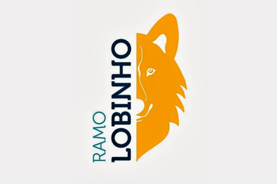
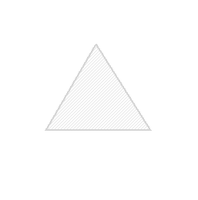
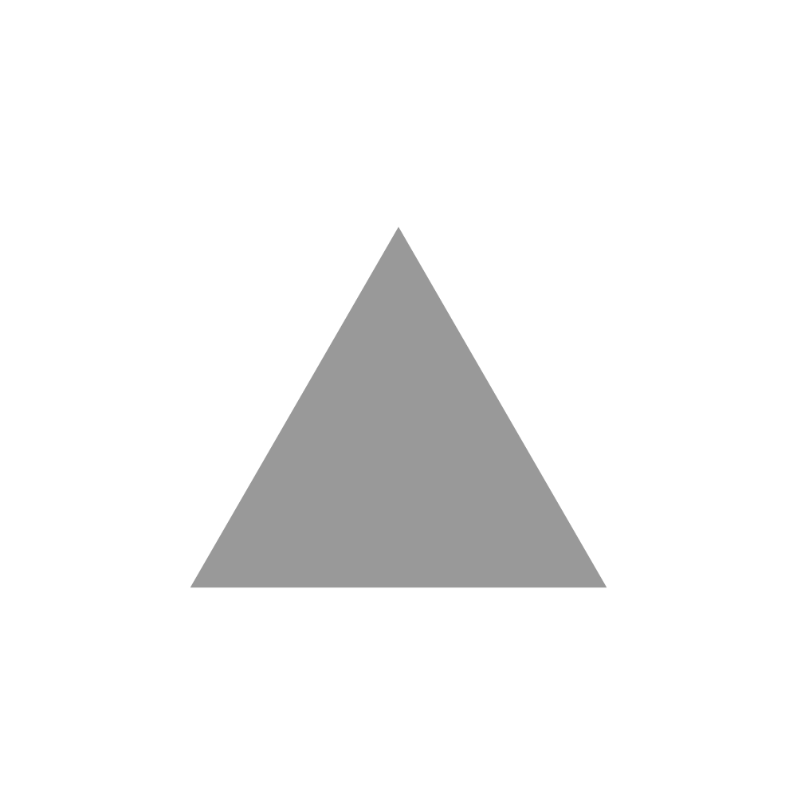
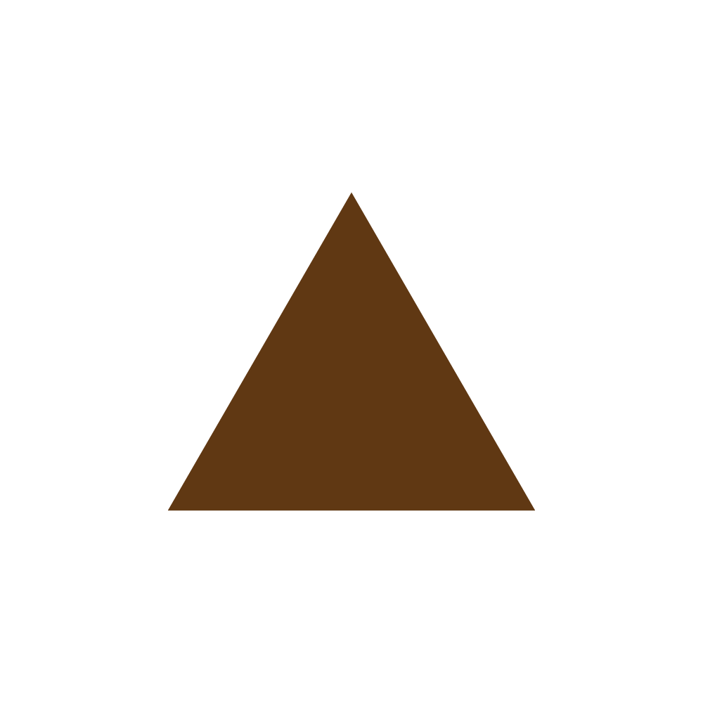

<link rel="stylesheet" type="text/css" href="../css/ramo-lobinho.css">

<section class="logo-lobinho">
    
</section>

<section id="lobinho-alcateia">
    <h2>
        Nossa Alcateia Lobo-Guará
    </h2>
    <p>
        O nome da nossa alcateia, é uma linda homenagem a única espécie de lobos que vive no Rio Grande do Sul.
        <br>
        O nome foi dado pela então Chefe Carla, que fez uma homenagem a alcatéia
        de lobos. É uma espécie que está quase extinta o que é uma pena.
        <br>
        <a href="https://pt.wikipedia.org/wiki/Lobo-guará">Lobo-Guará</a>
    </p>
    <br>
    <p><a href="../documents/Manual Lobinho.pdf" target="_blank">Bem Vindo a Alcateia</a></p>
    <br>

    <h2>Nós também temos nosso grito , mas chamamos de GRANDE UIVO</h2>
    <p>Akelá</p>
    <p>Faremos o melhor!</p>
    <p>Melhor?, Melhor?, Melhor?, Melhor?</p>
    <p>Sim!</p>
    <p>Melhor, Melhor, Melhor, Melhor!</p>
    <p>...</p>
    <p>...</p>
    <p>Melhor possivel</p>
    <br>
    <br>

    <div class="foto-alcateia foto-alcateia--full">
    </div>
</section>

<section class="lobinho-matilha">
    <h2>Matilhas</h2>
    <div class="matilha-conteudo">
        
        <p>Branca</p>
    </div>
    <div class="matilha-conteudo">
        
        <p>Cinza</p>
    </div>
    <div class="matilha-conteudo">
        
        <p>Marrom</p>
    </div>
</section>
